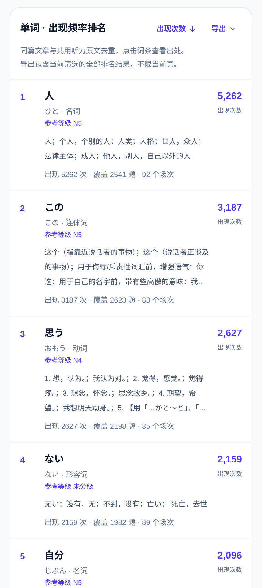
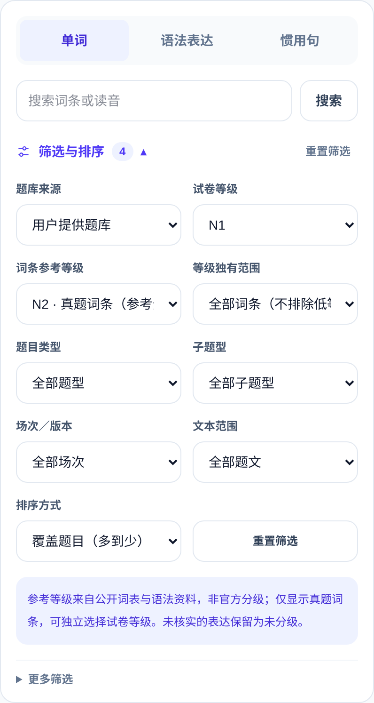
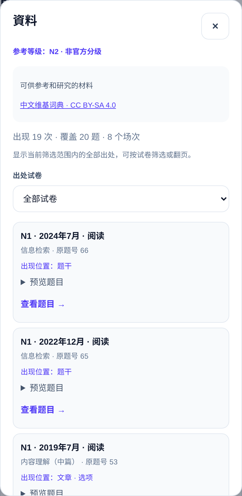
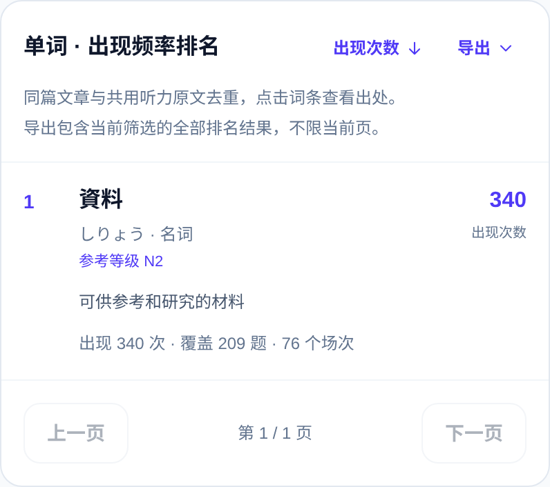
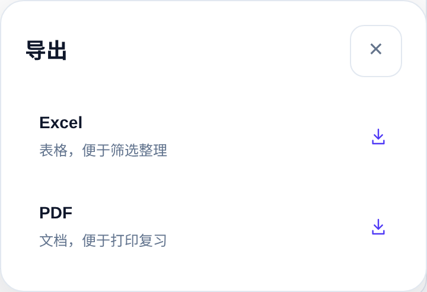
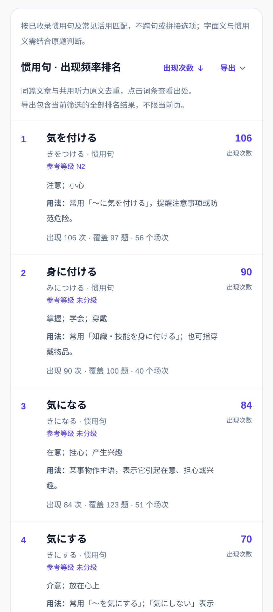
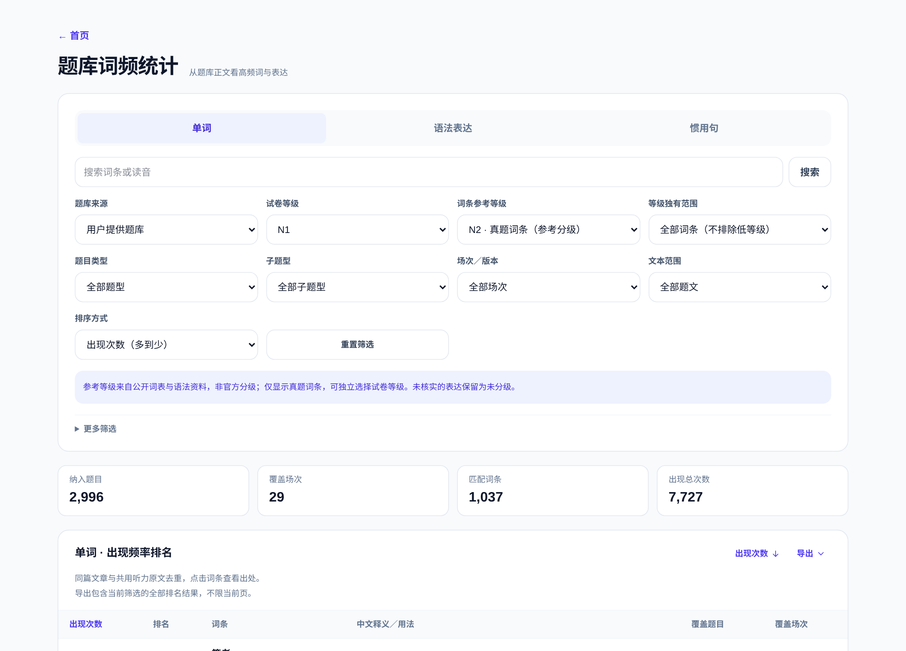
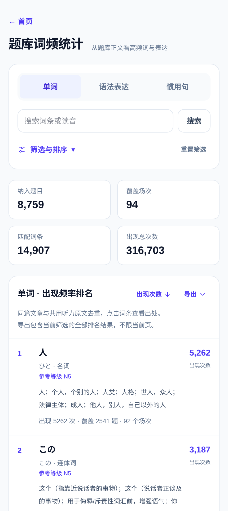

JLPT｜真题词汇 × 语法
自己开发的复习工具 01 / 06
给打工人 / 学生党的备考小工具
自己做了个 JLPT
词汇 × 语法检索站。
把真题里的词汇、语法，整理成复习清单。
能筛选能溯源能导出
不再一页页翻 PDF，
查词和复习更顺手。
界面清爽，功能简洁。
覆盖 N1–N5、多场次题文，
按自己的短板整理与复习。


给打工人 / 学生党的备考小工具
把真题里的词汇、语法，整理成复习清单。
不再一页页翻 PDF，
查词和复习更顺手。
界面清爽，功能简洁。
覆盖 N1–N5、多场次题文，
按自己的短板整理与复习。

学习什么、复习多少，按自己的需要来。
按目标等级和具体题型，
整理想复习的内容。
想集中记动词、接续词？
筛完，再按次数排列。
词条等级与试卷等级，
可以分开组合筛选。

从一个词，找到它出现过的卷子和题目。
等级、年月、题型、原题号，
放在一起更清楚。
点击词条就能查看记录，
也能直接跳转到原题。
不只记“这个词见过”，
还知道它是怎么用的。

选择 Excel 或 PDF，把整理好的内容带走。


继续筛选、分类、做笔记，
整理自己的复习资料。
保存下来，或者打印复习，
不用一直盯着屏幕。
把常见表达放在一起，结合真题语境复习。
不把固定表达，
拆成零散单词去记。
意思、搭配与使用方式，
放在一起更好理解。
回到原题看语境，
也能整理成复习清单。

给上班、上学之余的复习，留一点轻松。

